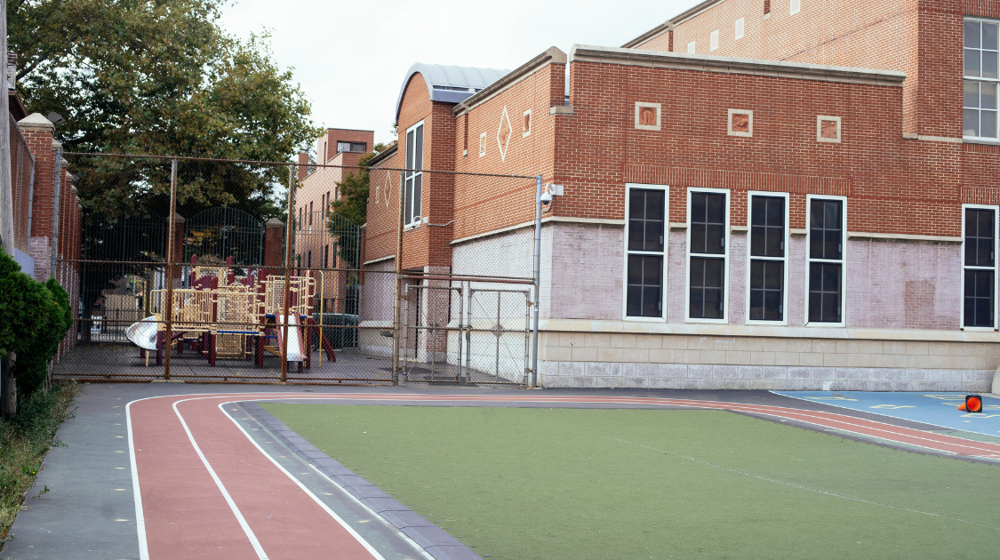

Coronavirus
Reliving March 2020: Schools Closed and New Spike in Cases
By Hanna Grover | Published Jan 7, 2021 10:20 p.m. PST

With 2022 barely getting started, we find ourselves perhaps back in the same situation as March 2020. The COVID-19 pandemic is rapidly increasing at a new peak as provinces in Canada try to get a hold on the situation. As of January 4, Canada has surpassed its two million cases mark and is at 2.36 million, with an average of 35,000 new cases every day. The new Omicron variant wave is a large reason for why we are seeing such a sudden spike in cases. Additionally, with many gatherings due to the holidays occurring, people may be forgetting to follow the usual protocols.
Health officials have acknowledged this peak in COVID cases and are taking all necessary precautions. On Dec. 23, 2021, the B.C government established a new set of restrictions which included having large capacity events at 50% capacity (movie theaters, etc.), no New Year Eve parties of any size, the closure of gyms, fitness centers, and dance studios, and the requirement to show your BC vaccination card at any organized event. The Omicron variant continued to dominate, with hospitalization rates up to 54% in B.C and a new record of 3,000 cases per day.
Health Ministers took immediate action of this and on Dec. 30th, it was announced that winter break would be extended by a week for B.C schools, which are now set to re-open on January 10th. Provincial Health Officer Dr. Bonnie Henry said the province will take a phased approach to returning from the winter break and this extra week will allow educators to start adding necessary precautions. Many individuals have been urging the health ministers to delay the start of this new school term due to the new wave of cases. The president of British Columbia Teachers' Federation (BCTF) Tori Mooring said provincial and district officials "need to do much more'' if they intend to keep schools open.
Dr. Bonnie Henry acknowledged that remote learning is a hassle for both students and parents and reassured that schools are to remain open even after this one week extension.
"We know that schools are safe and are essential for emotional and intellectual development," Dr. Bonnie Henry said.
B.C is not the only province in Canada to have shut down schools for the time being. Many other provinces around Canada have also chosen to delay the beginning of in-person schooling in the new term in an effort to limit the spread of the highly transmissible Omicron variant and to calm down this new spike in cases. Ontario recently announced that schools will be closed and classes will be moved online until Jan. 17th.
"The level of absenteeism we're seeing in other sectors tells us with absolute certainty that operating schools, ensuring teachers are on the job and not home sick will be a challenge we cannot overcome in the short-term, “ Ford said.
Manitoba, which had already pushed back the post-holiday return to Jan. 10 from Jan. 6, announced that it was delaying that by another week. Online classes are to begin next week, Premier Heather Stefanson said. Alberta had also delayed schools till Jan. 10th, but have made no further announcements. P.E.I announced that it will extend public health measures, including online learning in schools, until at least Jan. 17.
With restrictions increasing and schools being delayed, health officials encourage you to follow protocols and stay safe.